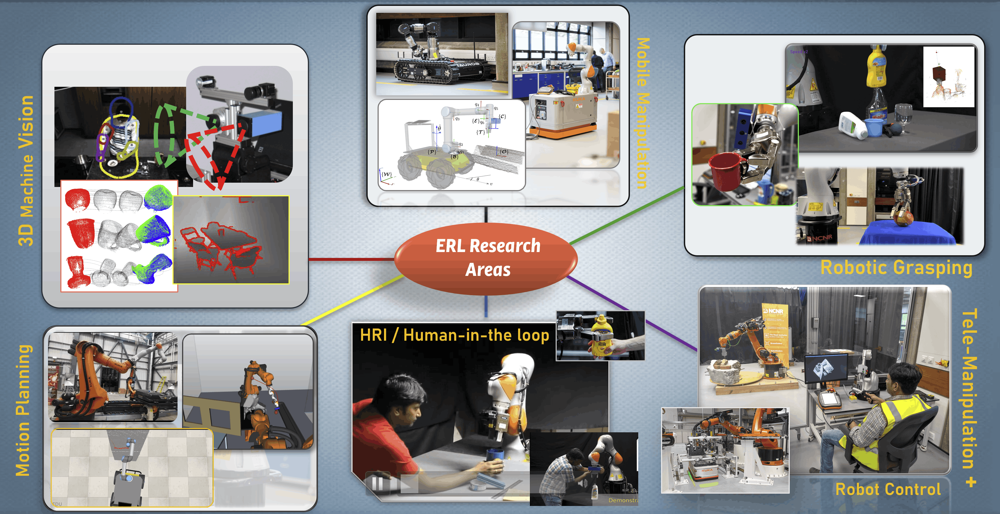
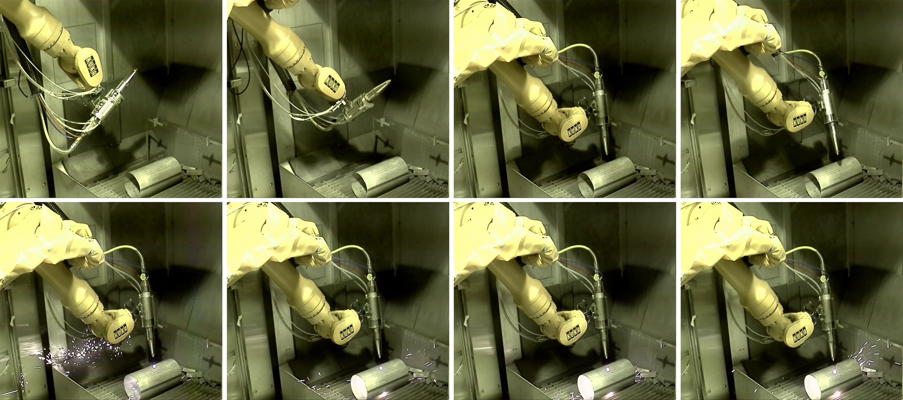
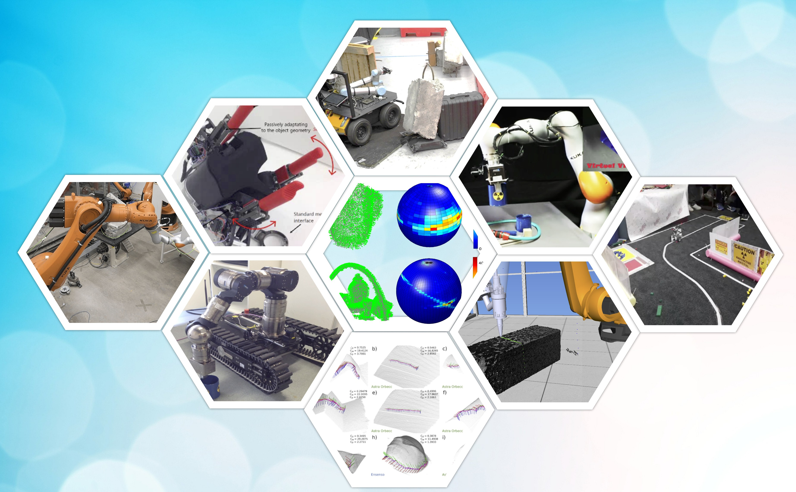

About the ERL
Pioneering autonomous systems for unstructured and hazardous environments.
Who We Are

The Extreme Robotics Lab (ERL) is a world-leading hub for Robotics and AI (RAI) research. Based at the University of Birmingham, we are one of the UK's largest, newest, and best-equipped robotics research facilities.
We have particular strengths in autonomous grasping, manipulator motion planning and control, driven by real-time 3D computer vision. We are also prominent in Human-Robot and Human-AI interaction research, in which both human and AI collaborate in various ways to control remote robot arms and vehicles. However, we are highly inter-disciplinary - our world-class researchers have publications spanning numerous different areas of robotics, AI, machine learning, computer vision, image processing, dynamics and control, and related areas of applied mathematics.
Our mission is to solve real-world engineering problems in hazardous environments where human presence is dangerous or impossible. We have particular strengths in autonomous grasping, manipulator motion planning, and control driven by real-time 3D computer vision.
World-Leading Impact
A World-First Achievement:
"In 2017, collaborating with the UK National Nuclear Lab, we delivered the first autonomous AI-controlled robot ever deployed inside a live radioactive environment. The system successfully laser-cut contaminated metal at the Springfields nuclear site."
National Leadership
- National Centre for Nuclear Robotics (NCNR): Founded and led the £42m UK consortium uniting 10 universities; over 400 peer‑reviewed papers in its first four years alongside landmark nuclear‑site deployments.
- Faraday Institution (ReLiB): Leading the robotics pillar of the £17m national hub since 2018, demonstrating robotic disassembly of half‑tonne EV battery packs, now expanding via €1.1m robotics funding within the REBELION consortium.


Our Facilities
1. ERL Campus Laboratory
Our 900m² custom-designed campus lab features an in-lab supercomputer, advanced manipulators, and high-resolution 3D imaging systems.
This space supports our mobile platforms (wheeled and tracked) and serves as a testing ground for Human-Robot Interaction (HRI).
2. BEIC Industrial Test-Bed
Our second facility is a unique, full-scale industrial test-bed located at the Birmingham Energy Innovation Centre (BEIC).
This site features heavy-duty robot arms (KUKA KR500) capable of handling multi-tonne payloads with 0.05mm precision. It is critical for our research into battery pack disassembly and nuclear waste handling.
Educational Outreach
Inspiring the next generation of roboticists.
We are passionate about engaging with the public and schools. The ERL regularly organizes STEAM Robotics Masterclasses, ranging from one-hour workshops to full-day events.
Prof. Rustam Stolkin collaborates with the Royal Institution (London) to deliver masterclasses and 6-week STEM series. We aim to show students that STEM careers directly contribute to solving global challenges like nuclear safety and sustainability.